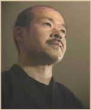
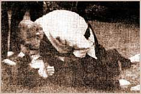

Tanemura Sensei - History
Sadatsune Tanemura (his Father), was the 17th family head of a Samurai tradition whose roots extend to those of royalty, as well as having bloodlines from the famous Daimyo of the Sasaki and Takeda families. Being a very traditional father, Sadatsune introduced his son to the martial arts at a very young age.
Sadatsune was a 5th Dan in Onoha Itto Ryu Kendo, and 6th Dan in Jukenjutsu (bayonet). He was also ranked in various schools of Jujutsu. The effect he was to have on his son was tremendous.

The young Shoto Tanemura was taught from the age of nine by his father and father's uncle, Kakunosuke Yamazaki, who was an 8th Dan in Onoha Itto Ryu. Almost every day he studied Kenjutsu and JujutsuJujutsu. The training was always of a traditional nature and conducted outside barefoot regardless of the weather. His regular training partner was thirty-two years his senior for the first five years of training. Regularly knocked out, the usual revival method was a bucket of icy cold water thrown over him, and once awoken he was expected to continue his training immediately.
At the age of fifteen he entered high school and, at the same time, began to study Shindo Muso Ryu Kenpo from the renowned Master Seishiro Saito. It was during these high school days that his quest for true martial arts was able to take form and begin to blossom. At fifteen he also saw himself studying the famous Asayama Ichiden Ryu of Taijutsu as well as Takagi Yoshin Ryu Jujutsu, Gikan Ryu Koppo jutsu and many others.
His training was so concentrated and intense that he received his first Menkyo Kaiden, aged twenty, in Shinden Fudo Ryu and Kukishin Ryu, quickly followed by Menkyo Kaiden in another 9 schools including Chinese martial arts.
While at University he was introduced to Kinbei Sato and began to study under him. In the winter of 1989 Kinbei Sato named him as the next Soke (Grandmaster) of Takagi Yoshin Ryu, Bokuden Ryu, Gikan Ryu, and Kukishin Ryu.

Besides his training at the Dojo, he would train at any time he was free, to improve his skill and techniques. His teachers were all of the "old style" type, very strict and closely guarding the secret techniques. They would teach each technique only a few times, and then expect the students to find out for themselves the points that make the technique work. To master these techniques, he would practise each technique thousands of times to discover these finer points, and to make the technique a natural movement. He would use everything as his training partner: the nearby woods, rice fields, riverbanks, and natural objects such as trees, rocks, stones, animals, and even the moon!
On moonlit nights, outside in a field, he practised thrusting for the centre of the moon - to improve his accuracy in Yari (spear) and Rokushaku Bo (6-foot staff) techniques, as well as thrusting at barely visible leaves as they swayed in the wind. He used his cunning to provoke animals to attack him and as they leapt to attack he would use taisabaki (natural body movements) to evade the attacks, until the animal (usually a dog) gave up.
He would use trees, rocks, and stones to develop his punching and kicking power and to strengthen his hands and feet; this would involve punching and striking a tree, for instance, until his hands bled. Once one of his teachers taught him a much better way to develop a strong strike, his teacher told him that a true martial artist passes by in a crowd unseen. With callused hands people could easily tell that he was a martial artist of some sort. Or, if he was in a fight, the opponent would be able to tell what type of training he had done...